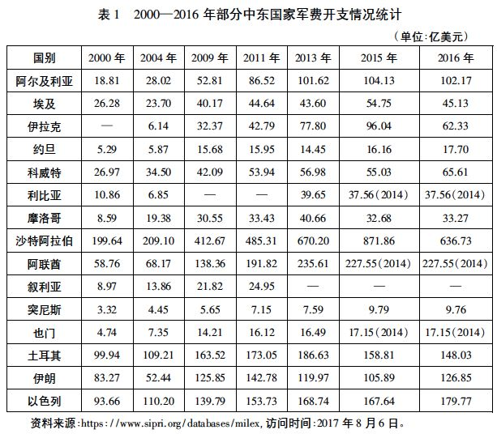
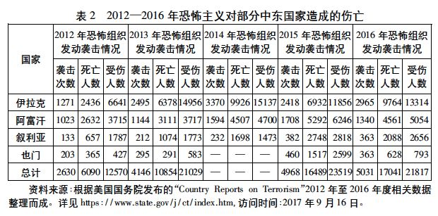

收录于合集
简
王林聪
中国社会科学院西亚非洲研究所研究员、所长助理
摘要
廓清中东安全的概念，明确中东安全的主体是推动中东安全有效治理的基本前提。在全球安全体系中，中东地区是最为突出的“短板”。中东安全问题盘根错节、尖锐复杂，有其深刻的内外根源。它本质上是外部干预和中东国家不发达状态的反映。在中东的秩序重塑和国家转型进程中，安全问题犹如“灰犀牛”般愈演愈烈、效应叠加，形成了多重安全困境。西方的新干涉主义、域内国家针锋相对的安全观和地缘政治博弈不断加剧中东的安全困境。
关键词
安全困境 安全治理 自主安全 安全秩序
从国际体系转型和全球安全体系构建来看，中东地区是全球安全体系的最大“短板”。在中东的漫长变迁中，中东国家在安全、发展、和平等领域存在严重“赤字（deficit）”，其中“安全赤字”首当其冲。众所周知，中东地区长期纷争不断，“黑天鹅事件”频发，存在极其复杂而尖锐的安全问题。
中东安全问题的新变化及其特征
中东安全问题是内外矛盾和多种因素长期作用的结果。进入21世纪以来，阿富汗战争和伊拉克战争严重损害了原本就十分脆弱的中东安全结构，催生了一系列新的安全问题。此后， 2010年爆发的西亚北非局势动荡又从整体上加剧了中东安全危机，致使中东安全问题更加复杂、多变，出现了许多新现象。
从国家层面看，伴随着部分国家的政权更迭和持续性社会动荡，政治安全和社会安全问题凸显 。 许多国家内部教俗矛盾激化，族群冲突加剧，极端主义泛滥，暴恐袭击频发，新旧安全问题叠加，国家、社会的安全状况日趋恶化，民众的不安全感与日俱增。
从地区层面看，中东安全问题的“普遍化”现象突出 。 西亚北非局势动荡发生后，政治伊斯兰的力量迅速增强，对域内国家的政治秩序构成了严重冲击和挑战。与此同时，中东国家之间以教派分野为背景的地缘政治角逐达到了空前激烈的程度，引发了中东秩序的新一轮重塑。在此过程中，恐怖主义势力坐大并跃出个别国家，由“点”及“面”扩散到整个地区，极大地威胁着中东的民族国家体系。中东整体上的不安全状态日益突出。
从国际层面看，中东安全问题的“全球化”态势日趋明显 。 一方面，西方新干涉主义对中东国家造成了严重危害，恐怖主义泛滥，难民问题凸显，安全问题逐渐外溢，危及周边安全和稳定。其中，以“伊斯兰国”武装组织为典型的恐怖主义已成为全球性的安全威胁。另一方面，大国在中东地区的争夺日趋白热化，形成了俄美对峙的“两极”态势。这不仅改变了中东秩序，而且对全球的安全与稳定构成威胁。
可以说，当前中东安全局势是该地区近30 年来最严峻和最复杂的时期。中东安全问题复杂化、尖锐化，已形成严重的安全危机。概而言之，有如下特点。
第一，传统安全和非传统安全问题同时恶化，相互作用，形成了极其复杂的“复合型”安全问题。从全球来看，冷战后传统安全威胁逐渐下降，非传统安全问题则有所抬头。然而，中东地区的情况是: 传统安全威胁并未减弱，非传统安全威胁又节节攀升; 传统安全和非传统安全问题相互激荡，非传统安全问题常常转化为传统安全问题。巴里·布赞（Barry Buzan） 曾指出，中东地区是政治—军事安全领域中的典型“地区安全复合体（regionalsecurity complexes）”。以战争和武装冲突为主要形式的传统安全威胁从未间断。近年利比亚战争、叙利亚战争、也门战争和巴以冲突接连爆发，许多国家仍处在战火之中。例如，持续6年多的叙利亚战争给该国带来了空前的灾难，其损失初步估计约为2260亿美元（相当于2010年该国国内生产总值的4倍），死亡人数高达40万—47万。全国约有半数人口背井离乡，或流散各地，或出逃境外，形成了第二次世界大战以来全球最大规模的难民潮。传统安全问题依然困扰中东国家，应对传统安全威胁仍是许多国家的重中之重。这从中东国家不断扩大的军费开支中就能管窥一斑。根据瑞典斯德哥尔摩国际和平研究所（SIPRI）的统计，近年来全球军费总额持续走低，但是中东地区军费开支却持续上升（参见表1） 。

中东国家一直承受着巨大的安全成本。例如，2013年中东地区整体的军费支出达到了1500 亿美元，比上年增加4%。在中东地区，沙特阿拉伯、阿联酋、土耳其、以色列、伊朗和阿尔及利亚的军费支出均超过100 亿美元。其中，沙特阿拉伯的军费支出较上年剧增14%，达到670 亿美元，2014 年又跃升至871 亿美元。实际上，在庞大的军费支出中，武器进口一直是主要部分。中东地区一直是美国、俄罗斯等国的军火倾销地。例如，在2012年至2016年期间，中东国家武器进口额比前一时期（2007—2011年）增长了86%，占全球武器进口总额的29%;其中，沙特阿拉伯这一时期武器进口增幅高达212%，是世界第二大武器进口2017年5月20日至21日，美国总统特朗普访问沙特阿拉伯，双方签署2800亿美元的大单，其中美国向沙特阿拉伯军售金额高达1100亿美元，主要用以对付所谓“伊朗的威胁”。可以说，中东国家军费开支长期居高不下，反映了地区严峻的安全形势。这反过来又推动了新一轮军备竞赛，进一步提高了传统安全风险。
与此同时，非传统安全问题在中东地区异常尖锐、复杂。其中最突出的问题就是恐怖组织势力坐大，成为最大的安全威胁。中东地区既是恐怖主义的滋生地，更是恐怖主义的重区。以“基地”组织和“伊斯兰国”为典型的恐怖主义不仅危及中东国家，还对世界各国的安全构成威胁。2012年至2016年，恐怖组织仅在伊拉克、阿富汗、叙利亚和也门四国就发动了空前频繁的袭击，造成惨重的人员伤亡（参见表2）。从中可以一窥恐怖袭击的猖獗和危害程度。

恐怖组织在中东地区不仅制造了一系列骇人听闻的袭击事件，而且利用中东乱局先后在也门建立了“伊斯兰酋长国”，在伊拉克和叙利亚建立了“伊斯兰国”。后者甚至不断攻城略地，试图摧毁伊拉克、叙利亚等国政权，改变中东地区的政治版图。恐怖组织不仅制造暴恐事件，还公开发动战争，兼有传统安全威胁和非传统安全威胁色彩，成为中东乃至全球安全的最大挑战。 2015 年以来，在国际社会的联合打击之下，“伊斯兰国”逐渐被击溃，但是它对中东安全的威胁并没有消除。溃败中的“伊斯兰国”开始化整为零，分散转移到埃及西奈半岛、利比亚南部沙漠、阿富汗以及中亚和东南亚等地。在这些地区，“伊斯兰国”尚有十余个分支机构（ 例如“西奈省”“阿尔及利亚省”“呼罗珊省”“也门省”等），仍然威胁着这些地区的安全 。
第二，政治安全问题凸显，成为中东安全的焦点。在瞬息万变的中东地区，政治安全是国家安全的核心，也是国家安全的象征。政治安全犹如一切安全的总阀门，一旦失守必将导致其他安全问题的集中爆发。 在以往的历史中，中东国家的政治安全是建立在威权统治的基础上的。无论是传统还是现代威权统治，它们都是政治安全的主要支撑。威权政治是中东地区的普遍现象，其显著特征是政治强人主导国家生活乃至地区事务 。
中东变局以来，威权政治遭受冲击，出现了前所未有的政治危机。长期执政且大权在握的“政治常青树”一个又一个轰然倒下，曾以稳定著称的突尼斯、埃及、利比亚、叙利亚等国瞬间变成动荡的“风暴眼”。伴随着政权更迭和政治动荡，政治安全问题呈现爆炸态势并产生连锁效应。围绕政治制度设计、政治发展定位和主体意识形态等议题，形成了宗教与世俗力量间的激烈对抗，并交织着族群、教派的利益纠葛。更为重要的是，随着许多中东强人政权的垮台，在很多国家出现了政治权威缺失的窘况。“权威真空”使得这些国家在面对内外安全威胁时更加脆弱。许多国家因此陷入了政治转型的困境: 一方面，各种政治力量激烈角逐，加剧了权力争夺和政治冲突的烈度，政局变动频繁; 另一方面，民众的政治参与诉求膨胀，街头政治和暴力盛行，加剧了政治动荡。政治安全成为当前中东安全中最为突出的短板。
第三，中东安全问题趋于多样化。中东安全问题几乎涵盖了中东社会的各个层面，所涉领域之广泛、类型之繁杂、形态之多样都是世界其他地区难以相比的。中东变局以来，各领域的安全问题都有不同程度的恶化，使得中东安全形势更加严峻。
首先，宗教安全和文化安全问题恶化。 一方面，中东地区宗教极端主义、恐怖主义泛滥，其主要手段是歪曲伊斯兰教教义，尤其是曲解伊斯兰教中的“圣战”思想，号召对异教徒和所谓“叛教者”展开“圣战”，将普通穆斯林引向极端化，极大地破坏了正常的宗教文化生态 。 极端主义猖獗至极，直接威胁着伊斯兰教的正常发展，对伊斯兰社会的宗教安全构成了前所未有的挑战。正因如此，中东教界、政界纷纷转而强调抵制极端主义。例如，2015年1 月埃及总统阿卜杜勒·法塔赫·塞西（Abdel Fattah alSisi）在艾兹哈尔大学发表演讲，提出艾兹哈尔大学的使命就是要反对极端主义、正确宣讲伊斯兰教、坚守正道、坚持中道。塞西还提出“革新宗教”的主张，即倡导“匡正伊斯兰话语”。这并非是要改变伊斯兰教，而是要去除附加在伊斯兰教上的歪曲成分，让伊斯兰话语真正回到坚持和平、宽容、中道的正确轨道上来，摒弃极端主义和暴力行为。沙特国王萨勒曼·本·阿卜杜勒阿齐兹·阿勒沙特（Salman bin Abdulaziz Al Saud）也强调“极端主义、恐怖主义和文化冲突是伊斯兰国家面临的主要挑战”。2017 年6 月，塞西总统再度强调“匡正伊斯兰话语”是打击极端主义和恐怖主义的关键。许多中东国家政要和宗教精英纷纷谴责极端主义和恐怖主义，其目的就是要维护宗教安全。 另一方面，西方对伊斯兰教的妖魔化也是长期痼疾，九一一事件后，对伊斯兰教的丑化和诋毁更是甚嚣尘上 。 许多人否定伊斯兰文明的价值，导致西方与伊斯兰世界的意识形态冲突日益激烈。与此同时，伊拉克战争后美国加大了对中东地区的民主改造，强化了对中东国家的意识形态渗透，向中东国家输出西方价值观，掀起了一场前所未有的“文化战争”。其结果是对中东国家的意识形态和文化安全构成了威胁。
其次，生态安全困境日益严峻。生态环境恶化和干旱问题一直困扰中东地区。近年来，严重的干旱席卷中东多国，沉重打击了许多国家脆弱的农业生产，造成粮食减产和歉收，推高粮食价格，引发粮食安全问题。据联合国粮食及农业组织专家称: 干旱和内战将使叙利亚今年的粮食收成降低1/3，约旦的降雨量已减少到近60年来最低水平，伊拉克和巴勒斯坦的粮食生产也大幅下降。严重、持续的干旱直接威胁着中东粮食价格。粮食安全已成为也门、叙利亚等战乱国家和埃及等国关注的焦点。饥荒已经在也门造成空前严重的人道主义危机，超过2000 万人需要紧急援助，其中近一半是儿童，因饥饿死亡者甚众。同时，水资源争夺势头也在加剧。埃及、苏丹、埃塞俄比亚围绕尼罗河水资源展开竞争，土耳其、叙利亚、伊拉克正在争夺底格里斯河、幼发拉底河和奥龙特河河水，伊朗和阿富汗在争夺赫尔曼德河，以色列、约旦、叙利亚和黎巴嫩则在抢占约旦河、耶尔穆塔河、利塔尼河以及西岸的地下水等。因水资源而引发的摩擦同领土和政治争端交织在一起，造成地区形势更加不稳。
最后，社会安全问题更加复杂。一方面，中东国家内部的贫富分化加剧，社会矛盾不断积累，在一定程度上引发了局势动荡。中东变局以来，伴随着街头运动，社会的激进化、极端化不断加速，社会稳定和安全秩序受到冲击。另一方面，青年问题尤其突出。 在绝大多数中东国家中，青年人口所占比例极高，是典型的“年轻化社会”。但由于经济发展水平低，就业机会有限，中东青年的失业率高达 30% 左右。因难以就业，中东青年在绝望之际很容易激进化，甚至加入极端组织。许多青年既是极端主义的受害者，又是极端组织的主体。青年问题对社会稳定和安全构成威胁 。
此外，能源安全、金融安全和难民问题都是21 世纪中东安全的新问题。凡此种种，不同类型、不同性质的安全问题要么悬而难解，要么伴随着中东变局而趋于激化。
中东安全问题的根源
中东安全问题由来已久，成因复杂，表现各异。究其根源是内外因素相互推动的结果，集中反映在国际、地区和国家层面上。
第一，从国际层面看，“外部性（ externality ）”是造成中东安全问题的独特根源 。 在中东安全问题的成因中，外部影响是极为重要而独特的因素。自近代以来，中东地区一直处于不断分裂的状态。许多人将中东视为分崩离析的“破碎地带”，大国的角逐则加剧了这一状况。域外大国将中东作为实现其战略利益的重要区域，利用地区内部的矛盾进行渗透和扩张，建立以自身安全利益为根本的所谓“中东秩序”。主宰中东的力量主要是域外大国，这就是中东国际关系演变中的“外部性”特征。域外力量长期主宰中东秩序，中东国家被迫受制于外部势力的操控，难以主导自身发展，缺乏自主性。奥斯曼帝国瓦解后，中东地区一直缺乏可以抗衡外部列强渗透和干预的力量核心。虽然民族国家相继独立，形成了中东的独立国家体系，但是没有改变中东地区受制于域外大国操控的局面。一些新兴中东国家的崛起受到域外大国的压制，它们实力有限，无法打破域外大国的主宰地位。中东地区依旧处于国际体系中所谓“核心区—半边缘区—边缘区”结构中的“边缘化”位置。域外大国一直扮演中东秩序的主宰者，长期的外来干涉和争夺导致中东地区动荡不宁、安全问题异常尖锐，安全秩序无法形成。这是中东地区动荡不安的根本原因。
21 世纪以来，中东地区既见证了大规模武装入侵（2001年阿富汗战争、2003年伊拉克战争），又目睹了所谓的“新干预主义”旗号下的政治围剿和军事干预（2011年利比亚战争、2011年以来叙利亚战争）。无论何种形式，外来强权特别是西方大国的介入都带来了严重恶果: 一是制造事端，引发新的矛盾和安全危机; 二是留下一连串难以解决和根治的安全难题。列强在中东地区的反复争夺又导致中东安全问题出现恶性循环。以此而言，“外部性”是中东安全问题的根源。
第二，从地区层面看，中东国家间的矛盾和冲突是中东安全问题激化的重要原因 。 中东国家间关系错综复杂，既有历史上的积怨，又有现实利益的纠葛，还有域外大国的操纵、利用和挑拨。阿拉伯人与犹太人的冲突持续了半个多世纪，巴勒斯坦领土上的争端更是未曾间断。进入21 世纪以来，巴以冲突不降反升，重新回到以暴制暴的老路上。武装冲突和战争的疑云再次笼罩中东，中东安全局势令人担忧。
值得强调的是，中东地区在民族国家体系建立后，由于各国国力强弱的变化以及国家奉行的安全观和安全战略的差异，地区国家间关系相当复杂，地缘政治利益的争夺异常激烈。最突出的表现是一些国家在实力增强后就开始寻求改变既有的地缘政治格局，走上了地缘利益争夺之路，甚至出现了“地区霸权主义”，严重威胁了地区安全。地缘利益的争夺是中东安全问题恶化的重要因素。 以叙利亚战争为例， 2011 **年叙利亚内战爆发并演化为地区战争，深刻反映了地区国家间的地缘政治较量和大国博弈（美俄在中东地区的争夺）。叙利亚战争交织着多重矛盾和多种力量，是观察中东地缘政治争夺的重要窗口。对于叙利亚政府和人民而言，叙利亚战争是一场捍卫主权独立、领土完整、维护政权存亡、保卫民族的正义之战 ; **对于中东国家而言，更多的是一场以教派背景为阵营分野的地缘政治较量，即以沙特阿拉伯为首的逊尼派阵营与以伊朗为核心的什叶派阵营之间的对抗不断加剧，叙利亚战争、也门战争、伊拉克重建、卡塔尔断交等安全问题几乎牵动了所有的中东国家，成为两个阵营的博弈场。其结果将深刻改变中东地区关系和中东秩序 。
第三，从国家层面看，中东民族国家的内部矛盾和纷争是中东安全问题的内在根源。中东民族国家独立时间短，在民族国家的建构过程中存在种种问题，社会和国家整合进展缓慢，社会成员在认同上存在显著差异。反映到现实层面，就是族群、部落和宗教认同高于国家认同，极大地削弱了现代民族国家的根基。这一状况使得中东国家内部的宗教和民族矛盾持续上升，一些国家（尤其是战乱国家）的内部“裂变”加速，分离主义逐渐抬头。当前，族群矛盾激化下的民族分离主义、部落主义（主要是利比亚）已成为影响地区安全的重要因素。对于中东的多民族国家来说，第三次世界民族主义浪潮和西亚北非局势动荡引起的中东变局逐渐成为激化族群矛盾的催化剂。在此背景下，一些少数族群中的离心倾向和分离意识迅速蔓延。
中东变局引发的叙利亚危机激化了中东地区复杂的民族和宗教矛盾，对中东的现代民族国家体系构成了威胁。叙危机进一步激活了原本潜伏的教派和族群纷争，强化了教派、族群以及部落成员身份，严重削弱了国家认同。近期叙利亚库尔德武装力量的自治倾向就是危机后续效应的表现，它将损害叙利亚领土和政权的统一。同样，伊拉克在萨达姆政权垮台后也陷于分崩离析。“伊斯兰国”崛起，几乎肢解了脆弱的伊拉克。伊拉克库尔德人的离心倾向与日俱增，从自治迅速迈向寻求“独立”。2014年7月初，伊拉克库尔德自治区主席马苏德·巴尔扎尼（MasoudBarzani）表示，由于“伊斯兰国”在伊拉克北部和西部攻城略地，伊拉克事实上已经分裂。因此，库尔德人应当投票决定是否独立。此后为对抗“伊斯兰国”，巴尔扎尼曾宣布推迟公投。 但是随着“伊斯兰国”大势已去，巴尔扎尼再度启动独立公投，并于 2017 年 9 月 25 日付诸行动。根据伊拉克库尔德自治区独立公投委员会公布的信息，公投共收集了 308.6 万余张有效票（投票率 72% ），其中支持票占 92.73% **。公投结果反映了伊拉克库尔德人争取独立的意愿，但是这种不顾伊拉克政府强烈反对的做法掀起了轩然大波。一方面，这加大了散居于土耳其、伊朗和叙利亚的库尔德人的民族主义情绪和自治意愿 ; **另一方面，公投遭到了伊拉克政府和周边国家的坚决回击。伊拉克政府宣布公投非法，出兵基尔库克，阻止伊拉克库尔德人的独立建国运动。土耳其、伊朗等周边国家也采取联合制裁，遏制库尔德民族的分离倾向。可见，族群矛盾和内部冲突对中东国家的安全构成严峻挑战，增加了地区安全和稳定的风险 。
当前中东安全的困境
如前所述，外来干涉、历史积怨、地缘政治利益纠葛、教派冲突、族群纷争等内外因素相互关联、相互作用，导致中东地区的安全问题不断恶化，形成了区域性安全危机和安全困境。当前中东的安全困境呈现多重性特点，表现在国内、地区和国际诸层面。
（一） 国内层面的安全困境
中东国家正处在转型的关键时期，这一过程的复杂性、曲折性和不确定性加深了中东国家内部的安全困境。转型中各种矛盾集中释放或爆发，形成了对内部安全的全面冲击。例如，强人政权的垮塌带来的是一系列旧恨新仇的瞬间释放，造成社会失稳和安全失序。政教、教俗和族群关系长期困扰中东各国，它们在当前各国的政治和社会转型过程中迅速演变为影响国家发展定位、走向和稳定的重大挑战。例如，政教和教俗关系直接决定了国家的性质、制度和权力分配，是国家的根本问题。在中东变局中，教俗阵营之间犹若水火、激烈对抗，多次出现流血冲突。埃及军方推翻穆尔西政权就是其中典型。同样，族群和部落冲突的增加也在很大程度上消解了国家的凝聚力，成为国家内部安全的最大挑战。中东地区的部落冲突主要有三种类型，分别是部落间暴力冲突、反政府暴力事件和跨境恐怖暴力事件。在利比亚和也门变局中，部落起着举足轻重的作用，形成了部落武装割据的态势。这不仅加剧了这些国家的“碎片化”，而且威胁着战后安全秩序重建。无论是利比亚和也门的部落问题，还是叙利亚、伊拉克和土耳其的族群问题，都反映了中东现代民族国家构建的艰难和现代化的挫败，国家和社会整合难以在短时间内完成。对此，有的学者指出，阿拉伯剧变之后中东安全形势之所以恶化，其主要原因在于“后殖民时代阿拉伯国家在追求现代化过程中的失败和脆弱”.复杂的政教/教俗关系、宗教极端主义、民族分离主义共同构成了转型时期中东国家的内部安全难题。
（二） 地区层面的安全困境
第一，原有的国家间纷争持续至今、难以解决，一定程度上形成了互不相让的“死结” 。 例如，2017年是英国发表关于巴勒斯坦问题的《贝尔福宣言》100周年，又是联合国通过巴勒斯坦分治决议70周年，更是第三次中东战争爆发50周年。但是，阿以之间的这场跨世纪争端仍然看不到尽头，巴勒斯坦问题的解决仍然遥遥无期。它引发了无休止的冲突，成为中东地区动荡的总根源，直接影响了中东地区的和平发展进程，形成了以色列与阿拉伯世界之间难以和平相处的安全困境。
第二，中东变局导致中东秩序剧烈变动，加深了安全困境 。 一方面，西亚北非局势动荡引发中东秩序的整体失衡和局部失控，一些国家的安全秩序近乎崩塌。利比亚、也门、叙利亚、伊拉克、阿富汗战乱频仍，政府控制力衰减，局部地区陷入前所未有的安全失序状态。另一方面，伴随着中东秩序的重塑，新一轮地缘政治较量空前激烈，中东各国不同程度地卷入其中，形成了新的安全困境。
第三，中东国家基于传统安全观制定的安全战略在一定程度上恶化了地区安全困境 。 几乎所有中东国家都持有传统安全观，在安全策略上往往针锋相对，甚至相互为敌。以色列奉行“进攻型传统安全观”，即绝对安全观。它以军事安全为基础，以“强军”和美以特殊联盟为保障，以追求绝对安全为目标，常采取以攻为守、先发制人消除安全威胁等方式解决安全问题，保障以色列的生存安全。无论是对邻国的行动（例如以色列发动的黎巴嫩战争），还是对巴勒斯坦所谓“安全威胁”的定点清除，都反映了这种倾向。伊朗奉行“防御型传统安全观”，它是以维护什叶派宗教和政权安全为目标的防卫型安全观，主要手段是加强自主安全能力建设。伊朗的安全观具有抵御外来威胁的性质，在这种安全理念的支配下，伊朗正在构建什叶派安全共同体，组建以什叶派穆斯林为核心的安全联盟，应对西方和以沙特阿拉伯为首的逊尼派阵营的威胁。当前，伊朗深度介入伊拉克、叙利亚和也门事务，就是其构筑安全屏障的表现。沙特阿拉伯奉行“对外依赖型传统安全观”，它以维护逊尼派宗教和政权安全为目标。其在自主安全能力不足的情况下强调借助美国的安全庇护维护国家安全利益，形成了“安全靠美国”和“发展靠能源”的“双依赖”安全结构。2015年12月，沙特阿拉伯建立了伊斯兰国家反恐联盟，该联盟拒绝伊朗、叙利亚和伊拉克参加，具有明显的排他性。沙特阿拉伯与伊朗针锋相对，双方的对峙随着叙利亚危机、也门战争和卡塔尔断交日趋尖锐，剑拔弩张。这在整体上加剧了地区安全困境，其自身也深陷其中。
此外，中东地区的极端主义、恐怖主义以及愈演愈烈的军备竞赛使得传统安全和非传统安全问题持续发酵，进一步加深了中东的安全困境。
（三） 国际层面的安全困境
**中东安全困境在国际层面的表现主要包括两点 : **一是域外霸权国家在中东地区的长期对峙，二是域外霸权国家与中东国家间的矛盾冲突 。
中东是域外霸权国家干预的重灾区。很长时间内，域外霸权国家间对中东战略要地的争夺和对战略资源的控制都是维护自身霸权利益、遏制和打压对手的有效手段。列强在中东地区的争夺常常很激烈，矛盾难以调和。这阻碍和破坏了中东地区的和平进程，在一定程度上造成了中东的安全困境。
域外霸权国家与中东国家之间的较量也会制造事端，催生新的安全问题，造成新的安全困境。美国总统特朗普上台后，多次扬言要退出伊核问题全面协议。当前，在主要敌人“伊斯兰国”溃败后，美国重新将伊朗视为在中东地区的主要对手，再度揪住核问题对伊朗实施制裁和打压，并鼓动沙特阿拉伯、以色列等国一起遏制伊朗。这导致中东安全局势趋于恶化，安全威胁与日俱增，由外而内地加深了中东安全的困境。
注：文章节选自《中东安全问题及其治理》的第二、第三部分，改动较大。作者还回顾了中东安全的已有研究，分析中东安全治理的缺陷，并对此提出了新思路。
文章来源：《世界经济与政治》2017年第12期
筛选：ササ 编辑：ササ 里仝